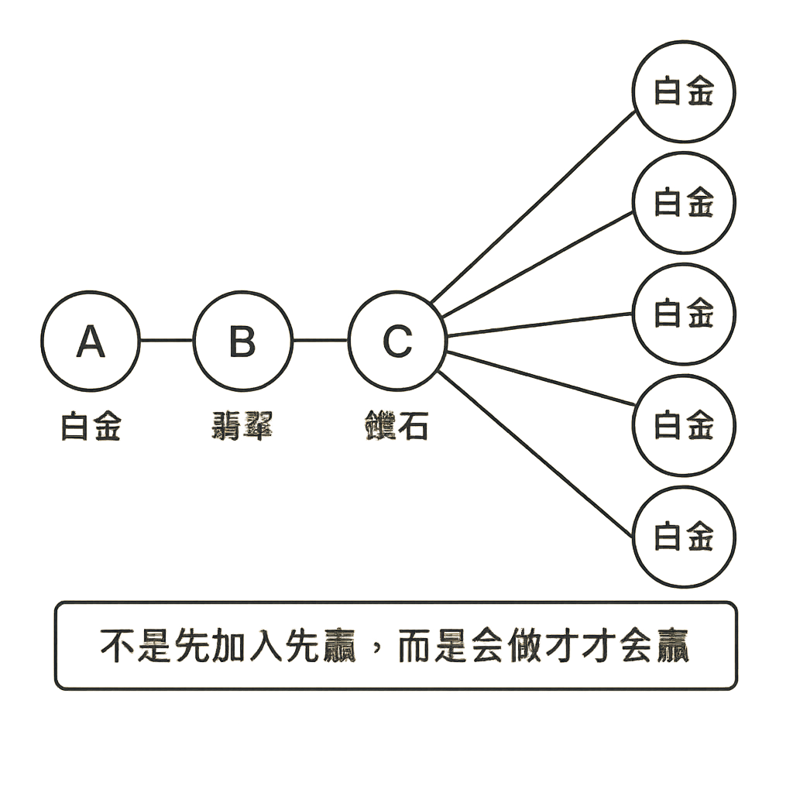

事業制度
一、創業三要素
條件：例如資金、專業、證照、學歷等。
風險：是不是我們能承擔的？
結果：是不是我們要的？
二、企業成功金三角
制度、產品、系統缺少任一項企業就做不大。只有兼顧三者，才能永續經營。
• 單打獨鬥，事業做不大。
• 制度不好，事業做不久。
• 產品不好，事業做不成。
• 企業金三角，才能永續經營。
三、為何選擇安麗
- 100% 滿意保證：最高理賠 100 萬美金責任險，經營事業零風險。
- 無最低業績要求：沒有寬度和深度的限制，事業可以無限大。
-
6% 領導獎金：有做有收入，沒做還有收入。
- 1 萬分 × 50 × 6% = 30,000 元獎金。
- 相當於一棟 3,000 萬房子出租的租金。
- 擁有 3,500 萬定期存款利息收入。
- 用心 2 年帶一位朋友在安麗做到 21%。
- 平均 6 ～ 10 萬收入／月。
- 可超越（公平性）：
- A：6 / 12 月 × 50 萬 → 白金 = 50 ~ 140 萬／年薪。
- B：3 × 白金 → 翡翠：海外旅遊 1 次（經濟艙），年薪約 250 萬。
- C：6 × 白金 → 鑽石：海外旅遊 2 次（商務艙），年薪約 500 萬。
- 可世襲：世世代代無條件繼承，努力不白費。
- 可全球年終分紅計畫：翡翠、鑽石年終獎金全球聯網計算。
